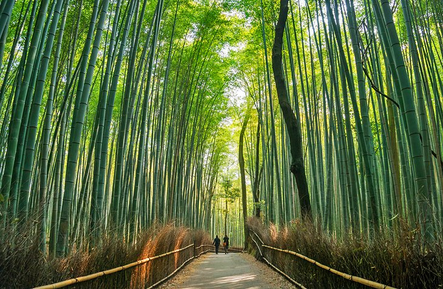
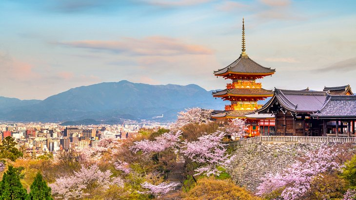
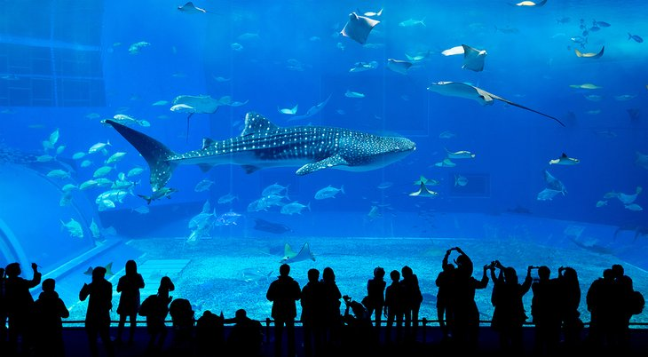

Top Places to visit in Japan
Japan is an enigma. It's the perfect juxtaposition of centuries-old traditions overlapped with lightning speed, cutting-edge technology. Many first-time visitors to Japan are often surprised to learn that, as one of the world's most advanced industrialized nations, this relatively small Asian country also boasts a rich and fascinating history that dates back thousands of years.
Indeed, long before many of Europe's most spectacular cathedrals were built, Japan's Shinto and Buddhist temples were already well-established and drawing pilgrims and patrons to their elaborate designs and décor. At the same time, the country was already perfecting the skills and trades that would set it on the path to riches, from fine porcelains and ceramics to textiles such as silk.
Much of this rich tradition has, despite wars and natural devastation, been preserved (or rebuilt), and a visit to Japan is a memorable adventure. Boasting an endless list of top attractions, fun things to do, and points of interest to explore, a vacation in Japan is certainly a great investment of time and money.
Discover the best places to visit in the country with our list of the top tourist attractions in Japan.
Mount Fuji

Without a doubt Japan's most recognizable landmark, majestic Mount Fuji (Fuji-san) is also the country's highest mountain peak. Towering 3,776 meters over an otherwise largely flat landscape to the south and east, this majestic and fabled mountain is tall enough to be seen from Tokyo, more than 100 kilometers away.
Mount Fuji has for centuries been celebrated in art and literature and is now considered so important an icon that UNESCO recognized its world cultural significance in 2013. Part of the Fuji-Hakone-Izu National Park, Mount Fuji is climbed by more than a million people each summer as an act of pilgrimage, which culminates in watching the sunrise from its summit.
While some still choose to begin their climb from the base, the majority of climbers now start from above the halfway mark, at the 5th Station, resulting in a more manageable six-or-so-hour ascent. Those who do attempt the complete climb are advised to depart in the afternoon, breaking up the climb with an overnight stop at one of the "Mountain Huts" designed for this very purpose. An early start the next day gets you to the top for the sunrise.
Of course, for many, simply viewing the mountain from the distance, or from the comfort of a speeding train, is enough to say "been there, done that."
Imperial Tokyo

Tokyo's most famous landmark, the Imperial Palace with its beautiful 17th-century parks surrounded by walls and moats, is a must-see when visiting the nation's capital. Don't be put off by the fact that the majority of the palace is closed to the public (it's still in use by the Imperial family), as there is still enough to see simply by strolling the grounds.
In addition to the many fine views of the palace from numerous points in the surrounding parkland, visitors are permitted into the East Higashi-Gyoen Garden and other areas that are opened to the public as part of an organized tour. One of the most romantic views is of the famous Nijubashi Bridge, or "double bridge," so named for its watery reflection.
Another one of the must-sees for tourists visiting Tokyo is the famous Ginza shopping district. This always bustling area is home to the Kabuki-za Theatre with its Kabuki performances, as well as the Shimbashi Enbujo Theatre with its traditional Azuma-odori dances and Bunraku performances
Hiroshima Peace Memorial Park
While little needs to be said here of the horrors of the atomic bombing of Hiroshima in August 1945, much can be said of the incredible efforts this vibrant city has made to commemorate the many victims of the world's first nuclear attack. Perhaps even more importantly, Hiroshima has become a symbol of lasting peace.
Visited by more than a million people each year, many from overseas, Hiroshima Peace Memorial Park (Hiroshima Heiwa Kinen Kōen) lies at the epicenter of the atomic blast in what was once a bustling part of the city. Here you'll find a number of important monuments, memorials, and museums relating to the events of that fateful day.
In addition to the grounds and gardens with their colorful cherry blossoms, the park is where you'll find the Peace Memorial Museum, with its numerous exhibits dealing with the issue of world peace. It's also where you'll find the Memorial Cenotaph and the Flame of Peace, as well as the Atom Bomb Dome, the ruins of an administrative building that lay at the center of the explosion.
Historic Kyoto

One of Japan's most visited cities, lovely Kyoto – one of the few cities in the country to be spared the devastation of WWII – attracts more than 10 million visitors annually. Most of them are here to explore Kyoto's fine old streets and architecture, much of it unchanged since the Imperial family took up residence here more than 1,000 years ago.
Even then, the city was Japan's most important cultural center. This legacy, in fact, continues to this day with its many museums and art galleries, each bursting with important sculptures, paintings, and other art forms.
Highlights of Kyoto's Buddhist-influenced architecture include its many well-preserved temples, 30 of which are still in use, and important structures such as the 14th-century Golden Pavilion (Kinkaku-ji), famous for its exquisite gold-leaf-clad exterior.
Be sure to also visit Nijo Castle, a 17th-century fortress that has retained its original walls, towers, and moat. Also worth seeing are the castle's beautiful gates, along with its palace with fine interior décor.
Another landmark to visit is the original Kyoto Imperial Palace (Kyoto-gosho). Built in AD 794, it's one of the city's most visited historic sites.
Finally, no visit to Kyoto is complete without spending time exploring the Arashiyama Bamboo Grove. This beautiful area of tall bamboo is just a few minutes' walk from the town center.

Just a short ferry ride from mainland Hiroshima is the island of Miyajima, famous the world over as Japan's Shrine Island. Covering an area of 30 square kilometers in Hiroshima Bay, Miyajima is best known as the home of the Itsukushima Shrine, a Shinto temple dedicated to the Princess daughters of the wind god Susanoo
Dating from the eighth century, the majority of the shrine's buildings rise out of the waters of a small bay supported only by piles. The effect at high tide is simply stunning, making these structures - including the famous Great Floating Gate (O-Torii) - appear as if they're floating on water.
Linked together by walkways and bridges, it's a fascinating place to explore, in particular its larger halls. These include the exquisite Honden (Main Hall), the Offerings Hall (Heiden), the Prayer Hall (Haiden), and the Hall of a Thousand Mats (Senjokaku).
Another notable feature is the shrine's stage, where visitors are entertained with traditional dances and musical performances. Also worth exploring are the island's exquisite grounds and gardens, home to wild deer and numerous bird colonies.
Temple City: Historic Nara

For centuries the hub of Japanese culture, the lovely unspoiled city of Nara is home to a large number of historic buildings, along with important national treasures and works of art.
In addition to its many historic streets, the city boasts numerous important old temples. These includ the magnificent seventh-century Kofuku-ji Temple, perhaps the best known of the Seven Great Temples of Nara; and the splendid eighth-century Todai-ji (Great East Temple), famous for its huge bronze statue of the Great Buddha (Daibutsu), cast here in AD 749.
Also of interest in Todai-ji are its Great South Gate (Nandaimon). This spectacular two-story structure is borne on 18 columns, with two Nio statues standing eight meters tall, and it guards the temple entrance. Also of note here is the Hall of the Great Buddha, the world's largest timber building.
Osaka Castle

Built in 1586 by famous Japanese warrior and politician Toyotomi Hideyoshi, Osaka Castle (Ōsaka-jō) was at the time the largest and most important fortress in the country. Although destroyed and rebuilt a number of times since, the present structure, built in 1931, remains true to the original.
Highlights of a visit include the huge five-story, 42-meter-tall main tower. Built on an imposing 14-meter-tall stone base, the tower is home to a number of displays detailing the history of the castle and the city. Be sure to visit the top floor for its superb views over Osaka, an especially attractive sight as the sun sets.
Also of interest in Osaka Castle Park is the Hokoku Shrine, while Osaka's best-known temple, Shitennō-ji, is also worth visiting and dates back to AD 59. Notable as Japan's first Buddhist temple, this lovely shrine features a five-story pagoda along with a number of other exquisitely decorated buildings. Among them are the Golden Pavilion (Kondō), with its fine statues and paintings; the Lecture Hall (Kōdō); and a lovely covered corridor linking three of the site's gates.
Chūbu-Sangaku National Park and the Japanese Alps
Japan boasts a number of outstanding areas of natural beauty, many of them designated as national parks or, in some cases, UNESCO World Heritage Sites. One of the country's most spectacular of these is Chūbu-Sangaku National Park in the center of Honshu. Located in the park's northern and central regions is the group of mountains collectively referred to as the Hida Mountains, or Japanese Alps.
This region contains some of the highest peaks in the country, including Hotaka at 3,190 meters, and Yari at 3,180 meters. Similar in many ways to the Alps of Central Europe - both in the character of the landscape and in its abundance of snow in winter - the Japanese Alps attract large numbers of walkers and climbers in summer and skiers in winter.
Of particular interest is the park's abundance of flora and fauna, including the rare ptarmigan and mountain antelopes found at higher altitudes. The park's many hot springs also draw visitors and led to the development of various spas and holiday resorts, the best known being Kamikōchi.
The Atsuta Shrine, Nagoya
The Atsuta Shrine, in the heart of the city of Nagoya, is the most important Shinto shrine in Japan, and attracts more than five million visitors each year. Established in the first century, this religious site is famous for its preserved Imperial insignia, the "grass-mowing sword" (kusanagi-no-tsurugi), one of only three in the country.
Also of interest are its principal shrine, Hongu, surrounded by an enclosing wall, and the treasury with its numerous works of art, including old and modern paintings, ceramics, jewelry, and traditional masks. While in Nagoya, be sure to also visit Nagoya Castle. This splendid moated complex was built in 1612 and boasts a 48-meter-high main tower that is famous for its two gilded dolphins (shachi). It's also a popular place to visit for its museum, containing art treasures from the former palace, and its spectacular views over the city and the Nobi Plain.
Fukuoka Castle Ruins and the City's Ancient Festivals
The ruins of the once-grand Fukuoka Castle (Fukuoka-jō), built in the early 1600s, punctuate the middle of Maizuru Park. The castle was once a fine example of the prolific and majestic hilltop homes preferred by Shoguns and city rulers. But it was destroyed after the Meiji Restoration as a backlash against the feudal system.
Today, only the ruins of the castle remain, including the main gate and one of the turrets. Visitors mainly come here for the leafy walking trails and scenic lookouts, with beautiful views over the Naka River. If you climb to the top of the ruins, you can see views of the city beyond. The park is especially lovely in spring when the cherry blossoms are in full bloom.
Fukuoka is also well known for its many events and festivals. The best-known of these is Hakata Gion Yamakasa, a famous two-week long, 700-year-old celebration held each July that draws millions of visitors from across the country to its colorful parades, as well as its traditional races and costumes.
The city is not without its modern attractions, too. Most notable among them is Canal City Hakata, a-city-within-the-city complete with a canal running through the complex, along with great shops, hotels, restaurants, and a theater.
Sapporo, Hokkaido

Located on Japan's northernmost island, Hokkaido, the city of Sapporo offers many things to do for tourists. As the island's largest city, it's a hub of cultural activity, hosting many excellent events and festivals. It also has a distinctive culinary style; a rich theatrical history; and plenty of museums, galleries, and parks
The focal point here is very much the city's attractive downtown area, the center of which is Odori Park, a large swath of green that's very pleasant to explore. From here, you can also access points of interest such as the Sapporo TV Tower, as well as the city's famous aerial tramway, an easy walk away. The Mount Moiwa Ropeway will eventually get you to the summit's Upper Station, from where you can enjoy incredible views over the city, a real treat at night.
The mountain is also the location of the Mount Moiwa Ski Resort, a popular winter destination, especially since the 1972 Winter Olympics were held in the city. And if you're arriving in winter, be sure to visit the Sapporo Snow Festival, held here each February and drawing in excess of two million revelers.
Fushimi Inari-taisha Shrine, Kyoto
When you visit Fushimi Inari-taisha Shrine, you'll be seeing red – but in a beautiful way. One of the most important shrines in Japan, the Fushimi Inari shrine is found in southern Kyoto, made famous for the thousands (yes, thousands) of scarlet-colored gates that arch over a web of trails. These arch-covered trails command silence, so expect a very peaceful walk towards the forest around Mt. Inari.
Inari is the Shinto god of rice – one of the most important gods in Shintoism. Of the thousands of shrines dedicated to him, Fushimi Inari is decidedly the most important. Most travelers come to see the vermilion gates, but the shrine itself is also open for exploration, and the buildings are quite spectacular.
Visitors can also hike to the top of Mt. Inari, which takes roughly two to three hours round-trip. The route up the mountain is dotted with shrines and smaller gates, as well as spots to grab something to eat.
Koyasan Okunoin

While a cemetery may not seem like an obvious top attraction, Japan's Koyasan Okunoin is a great exception. One of the most sacred places in the country, this popular pilgrimage spot holds the mausoleum of Kobo Daishi, the founder of Shingon Buddhism.
Daishi, also called Kukai, is one of the most important figures in Japan's Buddhist history. It is said that he sits in eternal meditation while waiting for the Buddha of the Future. Those who make the pilgrimage to his mausoleum do so to ask for salvation in this life.
Upon reaching the cemetery, visitors will cross the Ichinohashi Bridge, which is the first bridge into the cemetery. On the way to the mausoleum, visitors will pass more than 200,000 tombstones. The path leads to Gokusho Offering Hall, where visitors can make offerings, as well as pray for family members they have lost.
A second bridge, the Gobyobashi Bridge, is what separates the most sacred center of the site from the rest of the cemetery. Here is where you'll find the Miroku Stone, as well as Torodo Hall, which is a main worship hall just in front of the mausoleum. The hall is aglow with thousands of lanterns. Behind the hall is the mausoleum itself, and it is a most awesome experience to visit.
Kiyomizu-Dera, Kyoto

Kyoto is practically overflowing with gorgeous sites and landmarks. The city is a top attraction itself. But one can't come to Kyoto without visiting Kiyomizu-Dera, or the Pure Water Temple.
One of the most important temples in Japan, Kiyomizu-Dera was built in 780 CE on the grounds of the Otowa Waterfall. It was originally built to be part of the Hosso sect of Buddhism, but later formed its own sect in the mid 20th century.
Today the UNESCO World Heritage Site is known for its wooden stage, which overlooks the beautiful rooftops of Kyoto, and the marvelous trees that always put on fantastic color displays in both the fall and cherry blossom season.
On the grounds, visitors will find other important sites, like the Jishu Shrine, as well as the Otowa Waterfall itself, which still gushes at the base of the monument's main hall.
Shinjuku Gyoen National Garden, Tokyo

One of Tokyo's most famous districts is the Shinjuku district, known for its electric nightlife, trendy restaurants, and upscale hotels. But the heart of the district is also home to one of Tokyo's most naturally beautiful attractions – the Shinjuku Gyoen park.
Within the park are sprawling green spaces and trails of walking paths that wind around stunning floral displays, ponds, and manicured shrubbery. Come cherry blossom season, the park is one of the best spots to catch the brilliant waves of powder pink.
The park was built during Japan's Edo Period (1603-1867) as the residence of a feudal lord. After that it became a botanical garden and then was an entertaining grounds for Japan's Imperial Family in the early 20th century. It opened in 1949 as a public park.
Hakone Open-Air Museum, Hakone
The town of Hakone, located within the Fuji-Hakone-Izu National Park to the west of Tokyo, is known for its stunning mountains and tranquil hot spring resorts. That is reason enough to visit this stunning small town. But another top draw to this peaceful bit of paradise is the impressive Open-Air Museum.
True to its name, the outdoor museum is a sculpture park that spreads over 17 acres. Opened in 1969, it is one of the first open-air museums in Japan, featuring more than 100 sculptures all over the grounds.
One of the most impressive sculptures here is the Symphonic Sculpture, which allows visitors to climb a stained-glass tower to reach a viewing platform that overlooks the surrounding mountains, as well as the other works of art on the grounds.
In addition to the outdoor exhibits, the museum has an indoor exhibit, including one of the world's most impressive collections of Picasso. You'll find more than 300 of the great Spanish painter's works here, including his oil paintings, prints, ceramics, and sculptures.
Naritasan Shinsho-ji, Narita

Dating back more than 1,000 years, the Naritasan Shinshoji Temple is one of the most popular Buddhist temples in Japan. The purpose for the temple was to protect and pay homage to a statue of the Buddhist god, Fudo Myoo, which is said to have been carved by Kobo Daishi. Within the temple grounds are several buildings, including several different style pagodas, a park, and the main halls.
Approaching the temple complex is like stepping back in time. The half-mile journey from the rail station to the temple complex is a road lined with restaurants and handicraft stores. The same has been true of this street for hundreds of years. While the stores themselves may have a 21st-century appeal, the arrival experience to the temple complex has remained unchanged for centuries.
Okinawa Churaumi Aquarium

Japan's Okinawa archipelago consists of more than 150 islands that speckle the area between Taiwan and Japan's mainland. This tropical environment is completely unique to other areas of Japan, home to beautiful beaches and swaying palm trees. The main island is also called Okinawa, and is home to several museums, as well as the Churaumi Aquarium.
The aquarium is widely considered to be the best in Japan, known for its Kuroshio Tank. Within this massive tank are about 60 different species of animals, but most visitors come to see the gigantic whale sharks and gliding manta rays.
Other attractions within the aquarium include a deep water exhibit, which shows off bioluminescent fish, as well as an area dedicated to tiger and bull sharks. Outside are a variety of pools that are home to dolphins, sea turtles, and manatees.
Matsumoto Castle, Nagano

Japan has hundreds of beautiful, historic castles. But none is as complete or mesmerizing as Matsumoto Castle. Built from 1592 to 1614, Matsumoto is located in the city of Nagano. Tip: One of the best times to visit the castle is in the spring, when the grounds of the castle are powdered a soft pink with the bloom of thousands of cherry blossoms
Inside the castle, visitors have one of the best glimpses back into time. Matsumoto Castle has maintained its wooden interiors, giving a true historic feel to the experience. Matsumoto is considered to be one of five castles that are designated as "National Treasures of Japan." It is the oldest six-story castle tower that remains in the country.
Arashiyama Monkey Park, Kyoto

Located in the Arishayama section of Kyoto, the famous Arashiayama Monkey Park is one of the best things to do both in Kyoto, as well as Japan overall. A short hike up a forest-covered mountain opens up to sweeping views over the city, as well as a troop of more than 120 Japanese macaque monkeys.
The macaques roam freely in the monkey park, allowing visitors to get up close and personal with these energetic creatures. You can even feed them with food you purchase at the park. You'll find a small, wooden enclosure where you can feed the monkeys. Outside the enclosure the macaques roam freely, bouncing from branch to branch and scattering across the dirt trails.
The top of the peak also provides a great view of Kyoto and the beautiful mountain peaks in the distance. Visiting the monkey park is wonderful in both spring and fall because you'll have a bird's eye view of the cherry blossoms and the brilliant changing of the leaves.
Kenrokuen Garden, Kanazawa

Perfectly manicured with the highest attention to detail, the gardens in Japan are truly works of art. To visit a Japanese garden is to step into a painting. Arguably the most beautiful garden in Japan is the Kenrokuen Garden in Kanazawa. The grounds used to be a part of Kanazawa Castle and were opened to the public in the 19th century.
What makes the garden so special is that it was designed around what are known as the six essentials to make a perfect garden. These include spaciousness, seclusion, antiquity, abundant water, views, and artificiality.
While exploring the grounds, visitors will pass by beautiful pools, babbling brooks, bridges, teahouses, artfully placed stones and flowerbeds, as well as sweeping views and secluded pockets.
The park is a beautiful spot to witness the cherry blossoms in the spring, as well as the sweeping autumn colors that take over in the fall.